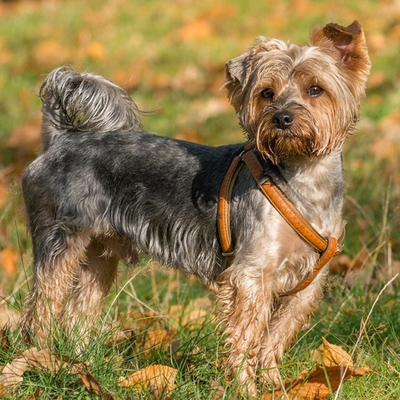

Dogs
Name: Sherbet
https://www.lollypopanimals.org/profile/57988367
{kind=link}

- Breed: Mixed breed
- Age: 3 years, 5 months
- Sex: Male
- Description: Sherbert is a friendly boy who gets along great with other pets - big or small! He loves to play tug-o-war and to spend plenty of time outside getting to run around.
- Gets along with other cats/dogs/children: Gets along with other cats and dogs and children
Name: Chewie
https://thehappypuppysite.com/cairn-terrier-mixes/
- 
- Breed: Cairn Terrier mix
- Age: 2 years
- Sex: Male
- Description: Chewie is an adventurous pup who loves to play all day but also cuddle up all night! Chewie does not enjoy the company of other dogs so he is best fit for you if you do not have any other pets.
- Gets along with other cats/dogs/children: Gets along with other cats and children, but not dogs
Name: Izzy
https://goldenhearts.co/golden-retriever-rescue-ohio/
{kind=link}

- Breed: Golden Retriever
- Age: 3 years 2 months
- Sex: Female
- Description: Izzy is a fun-loving dog who wants to be your best friend more than anything else! She loves going on hikes and swimming. Izzy can’t wait to meet you and be welcomed into her new home!
- Gets along with other cats/dogs/children: Gets along with other cats and dogs and children
Name: Lola
https://www.reddit.com/r/rarepuppers/comments/fa06rj/our_6_year_old_beagle_chester/
{kind=link}

- Breed: Beagle
- Age: 7 years 5 months
- Sex: Female
- Description: Lola loves long naps on the couch and cozying up on rainy days. While she may seem grumpy at times, she is easy to win over with a treat and becomes more friendly as you get to know her.
- Gets along with other cats/dogs/children: Gets along with other dogs and children, but not cats
Name: Duncan
https://www.k9web.com/breeds/red-nose-pitbull/
{kind=link}

- Breed: Pitbull
- Age: 4 years 3 months
- Sex: Male
- Description: This sweet boy loves to be goofy and play around with other dogs. Duncan is friendly with kids and won’t miss the chance to cuddle up. He is full of energy in the morning and will beg you to play fetch!
- Gets along with other cats/dogs/children: Gets along with other cats and dogs and children